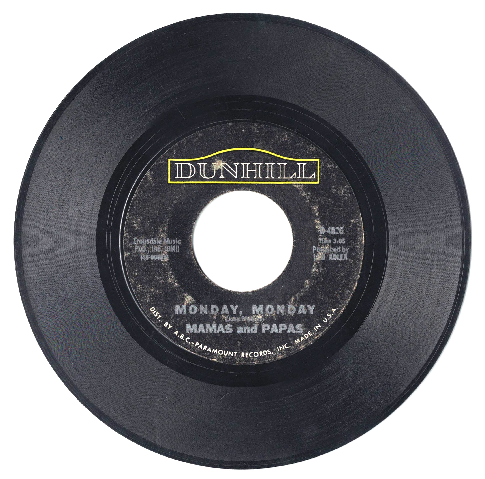

Product No. HEC-0115
$4.95
Shipping: $8.95
Description
45 RPM, 7-inch single
Full Description
The Mamas & the Papas were an American folk-rock vocal group whose rich harmonies and distinctive California sound made them one of the most popular groups of the 1960s. The classic lineup consisted of John Phillips, Michelle Phillips, Denny Doherty, and Cass Elliot. Formed in 1965, the group quickly became associated with the emerging folk-rock movement. Their breakthrough hit, "California Dreamin'," became one of the defining songs of the decade. They followed it with other major hits including "Monday, Monday," "I Saw Her Again," "Dedicated to the One I Love," "Creeque Alley," and "Words of Love." John Phillips was the group's principal songwriter and arranger, while the combination of Cass Elliot's powerful voice, Denny Doherty's smooth lead vocals, and Michelle Phillips' harmonies gave the group its unmistakable sound. Their music blended folk, pop, and rock influences with polished vocal arrangements. Despite their success, personal tensions and complicated relationships within the group contributed to its breakup by the end of the 1960s. The members later pursued individual careers, with Cass Elliot becoming especially successful as a solo performer. The Mamas & the Papas were inducted into the Rock and Roll Hall of Fame in 1998. Their recordings remain closely identified with 1960s popular music, and songs such as "California Dreamin'" and "Monday, Monday" continue to be widely recognized classics.
Condition
Good condition